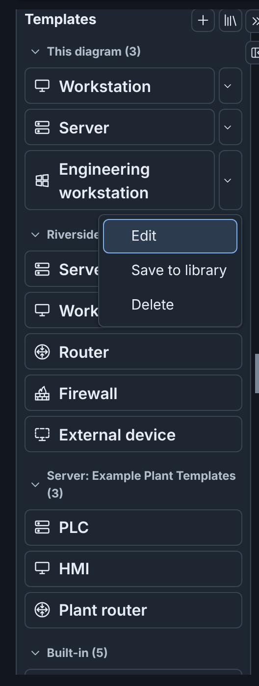
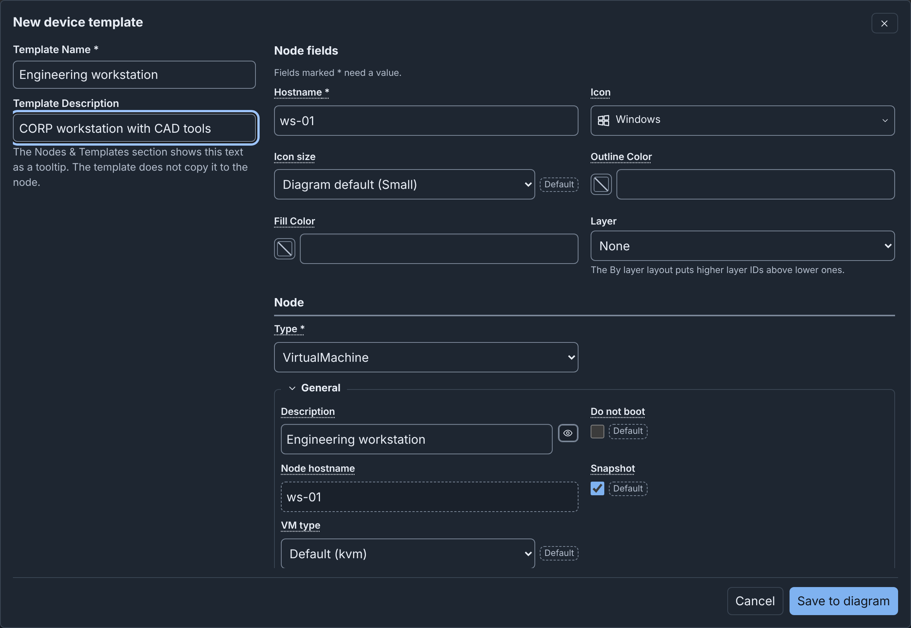
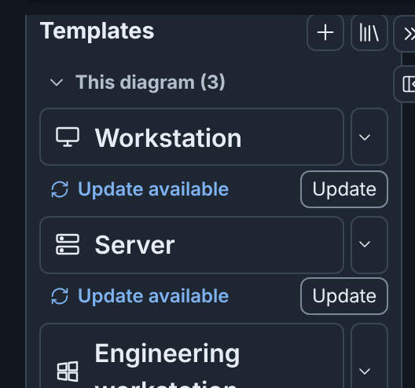
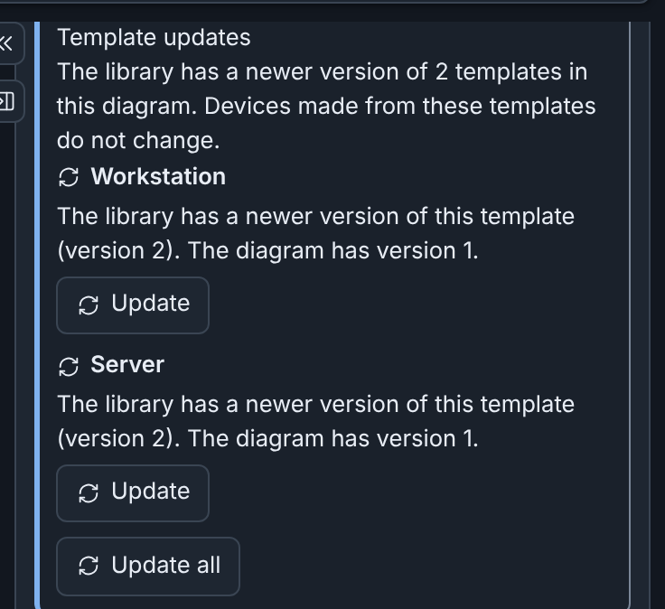
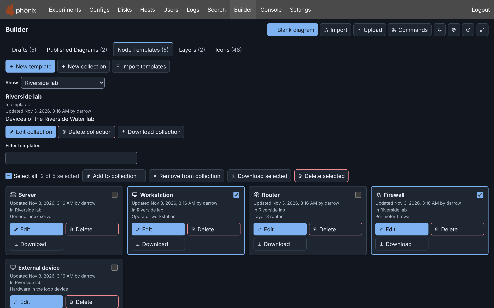
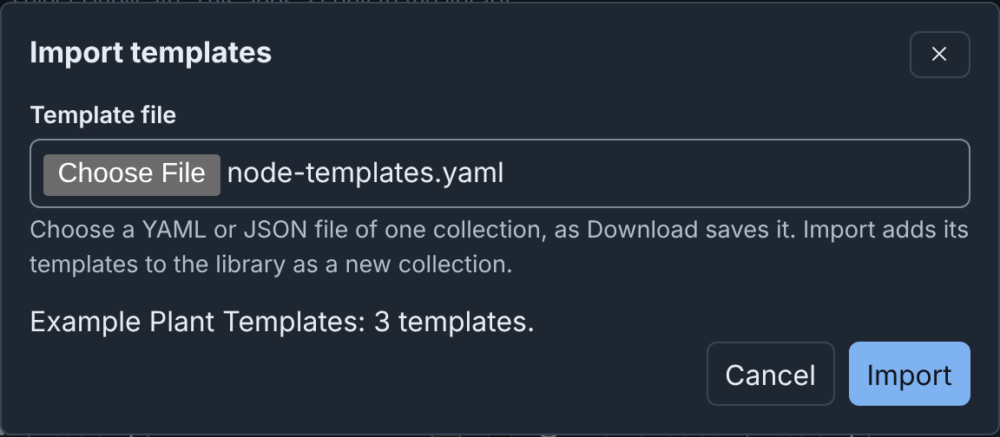
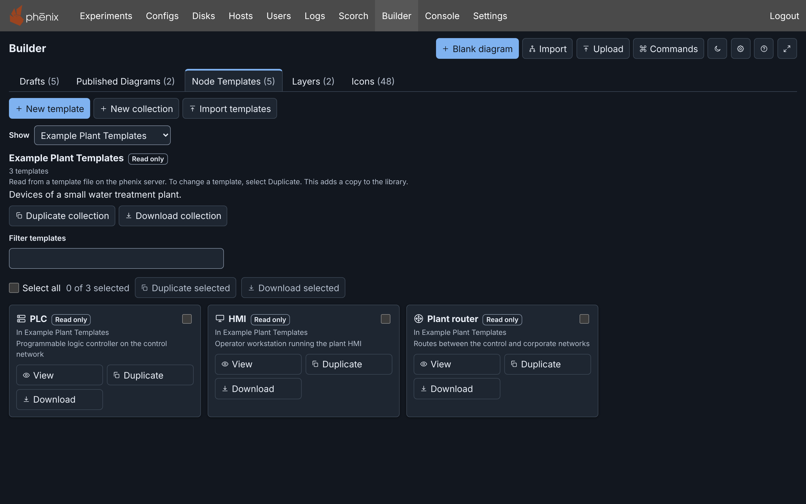

Node Templates: details¶
Info
This page holds every rule, limit and message of this feature. For the short guide, see Templates and Icons.
A device template holds the fields of a new device: icon, custom icon, icon size, outline and fill colors, layer, and the whole node spec. To add a device made from a template, select the template under Templates in Nodes & Objects, or drag it onto the canvas (see Adding devices).
Templates are kept in four places:
- In a diagram. A diagram template is part of the Builder document, so it goes everywhere that the diagram goes. See Diagram templates.
- In the template library. The phenix server keeps one library for all of its users. See The template library.
- Built in. phenix has five read-only templates. See Built-in templates.
- On the phenix server. Template files of an administrator become read-only collections. See Server collections.
Template files move templates between these places (see Downloading and importing templates).
Templates in the editor¶

Under Templates, Nodes & Objects lists the device templates in sections, in this order:
| Section | Templates |
|---|---|
| This diagram | The templates of the diagram, linked templates included. |
| Library or Other library templates | The library templates that are in no collection. The name is Other library templates when the library has collections. |
| Each collection | The collections of the library, then the server collections, such as Server: NLR Node Templates. |
| Built-in | The five built-in templates, always. |
A template in two collections shows in both sections. A collection with no templates does not show. Section names show only when two or more sections have templates. Each section name is a button that collapses or expands the section, and shows its number of templates. The browser keeps the collapsed sections until you log out.
The tooltip of a template gives its description. It also names the read-only collection of a server template, and the reason for the mark of a linked template.
Two buttons follow the Templates heading:
- New device template (the +) makes a diagram template (see Making a diagram template).
- Node Templates library leaves the draft and shows the Node Templates tab. It also works in a draft that you can only view.
A device made from a template has these properties:
- Its name is the hostname of the template. When that name is taken,
Builder adds a number, for example
plc-2. - It has a connection point for each interface of the template, and no connections. Builder empties a VLAN that names a network of the diagram, and keeps other VLAN text.
- It uses the custom icon of the template, from the icon library of the server (see Custom icons).
- It uses the icon size of the template, or else the icon size of the diagram (see Icon size).
- It has the layer ID of the template, if any. When the diagram does not have that layer, it shows as "Layer N" (see Layers).
- It has no description, and no link to the template. When you change, update or delete a template, no device changes.
When you add a device from a library template or a server template, Builder also adds a linked copy of the template to This diagram. The device and the copy are one change, for example "Added device and template PLC". When the diagram already has a linked copy of the template, Builder adds only the device. A built-in template gives no copy. When the diagram holds 50 templates, Builder adds only the device, and says so.
In the command palette, Add device lists each template once, with its
section and its image. Type t: to find a template by its other fields
(see Command palette).
When the library cannot be loaded¶
When Builder cannot read the library, Templates says "The Builder could not load the template library." and shows Retry. The diagram templates and the built-in templates stay listed. If a later read fails, the templates of the earlier read stay listed.
The server can hold a library that this version of phenix cannot read, for example from a newer version. Templates says "The Builder cannot read the template library. A newer version of phenix may have saved it." with no Retry. The Node Templates tab says the same, and still lists the built-in templates and the server collections. Open the library with the phenix version that saved it.
Builder reads the library when it opens, and again:
- Each time it reads the drafts lists.
- When a draft opens in the editor.
- When the browser window comes to the front while the editor is open.
- After each change that you make to the library.
Diagram templates¶
Making a diagram template¶
To save ws-01 of Riverside Water as a template of the diagram:
- Select ws-01 on the canvas.
- Click New device template (the + beside Templates), or run New device template from the command palette.
- Change Template Name from ws-01 to
Engineering workstation. - In Template Description, enter
CORP workstation with CAD tools. - Click Save to diagram.
The template shows under This diagram. The save is one change that Undo can reverse.
A template made from a selected device keeps all of the device except its
connections, so Builder empties the VLAN of each interface. Builder first
saves the unapplied Inspector changes of that device. With no device or
with several nodes selected, the template starts from a plain device
(hostname device, image ubuntu.qc2) with no name.
In a draft that you can only view, the + does nothing. When the diagram holds 50 templates, its tooltip says that the diagram is full.
The template editor¶

On the left are Template Name (required) and Template Description. Each is one line: a pasted line break or tab becomes a space (see Limits). Two templates can have the same name, but the field then shows a note.
On the right, Node fields has the fields of the Inspector: Hostname, Icon, Icon size, Outline Color, Fill Color, Layer and the node spec, with the same checks (see Editing a node). Hostname is the name that new devices start from. Rarely used fields are in More settings at the bottom. There is no Apply, Position, Connection points or Edit layers….
- Icon also chooses a custom icon (see The Icon field).
- Icon size Diagram default uses the icon size of the diagram that the device is in. For a diagram template, the choice names that size, for example "Diagram default (Large)".
- Layer offers the layers of the diagram for a diagram template. For a library template, it offers the default layer set, or the placeholder layers when the server has no default set (see The Layers tab). For a template with no layer of its own, it shows the layer that the node matchers give (see Layers).
Save, or Save to diagram for a new template, first checks the fields. On an error, focus moves to the list of fields that need attention. The device of a template can have at most 16 KiB as JSON. Enter in Template Name or Template Description saves.
Cancel, Esc, the close button or a click outside closes the editor. If you made changes, it asks first.
Editing and deleting a diagram template¶
Each template of This diagram has a menu:
- Edit opens the template editor.
- Update, on a linked template with a newer version (see Linked templates).
- Save to library adds a copy to the library, and links the diagram template to it, as one change of the diagram. When the diagram carries its own copy of the custom icon, Builder first sends it to the icon library of the server (see The diagram and its icons). If that fails, Builder still saves the template and tells you why.
- Unlink, on a linked template.
- Delete deletes the template from the diagram, without a question. Undo brings it back.
Linked templates¶
A linked template is a diagram template that is a copy of a library template or a server template. The diagram gets one when you add a device from such a template, or when you click Save to library.
The link names the source template and the version that the diagram has. Builder compares each linked template with its source when a draft opens, and each time it reads the library. A mark under the template shows when it needs your attention:
| Mark | What it means | Button on the mark |
|---|---|---|
| Update available | The library has a newer version of the template. For a server template, an administrator changed the template file and restarted the server. | Update |
| Deleted from library | A user deleted the library template. | Unlink |
| Removed from server | The server collection no longer has the template. | Unlink |
The tooltip of the template gives the full reason, with the version numbers. A draft that you can only view shows the marks without buttons.

With nothing selected, the Inspector lists the same templates under Template updates, each with Update or Unlink (see With nothing selected). With two or more newer versions, Update all updates all of them.

To update a linked template:
- Click Update on its mark, in its menu, or in the Inspector.
- Read the question. It tells you if the update replaces changes that you made to the template in the diagram.
- Click Update template.
The diagram template gets the name, the description and the device fields of its source. Devices made from it do not change. The update is one change, so Undo can reverse it. Update all asks once, and its button is Update templates.
Unlink removes the link and keeps the template as it is, without a question. It is one change.
You can change a linked template in the diagram. It keeps its link, and an update replaces your changes.
The template library¶
The phenix server keeps one template library for all of its users, and no user owns it. Each Builder user sees the same templates and collections, and can add, change and delete them (see The libraries). Only the built-in templates and the server collections are read only. A change shows for all users the next time Builder reads the library.
The Node Templates tab¶
To see the library, select the Node Templates tab on the drafts page,
or Node Templates library in the editor. The command palette has
Open Node Templates library in the editor, and Show Node Templates
on the drafts page. In the command palette, c: shows a collection, and
t: opens a template in the template editor.

The tab holds:
- New template, New collection and Import templates (see Downloading and importing templates).
- Show, which selects the list: All library templates, Templates with missing images, the collections under Library collections, Built-in templates, and the server collections under Server.
- Filter templates, which shows only the cards that match the text. It
finds a template by its name, by the fields that
t:in the command palette finds, and by its source (Library, Server or Built-in). The text stays when Show selects another list (see Filtering the lists). - A row that acts on several of the cards that show (see Selecting several templates).
- A card for each template, with its last change and the user who made it, its collections, and Edit (or View), Delete and Download.
The cards of the built-in templates and of the server collections have the tag Read only, and View, Duplicate and Download.
When the tab cannot read the library, it gives the reason, with Retry.
New template opens the template editor on a plain device with no name. Edit on a card opens the editor on that template. Save to library (or Save) sends the template to the server, and Undo cannot reverse this. When the save fails, the editor stays open and gives the reason, for example "Could not save the template. A library holds at most 200 templates."
Another user, or you in another window, can change the template after you open it. The editor then says so. Click Save again to replace that version, or Cancel to keep it.
Delete asks first. It deletes the template from the library and its collections, for all users, and you cannot undo this. Diagrams keep their copies, which then show Deleted from library.
When someone changed the library after the tab read it, Delete, Delete collection and Delete selected delete nothing. The tab then shows the library as it is now. Check it, and then delete again.
Missing disk images¶
The Node Templates tab compares the drive images of each template with
the disk images of the server. It compares file names with the same case,
as the drive image check of a diagram does (see
Checks and warnings). A card with an image
that the server does not have shows a warning, for example
The server has no disk image named "ubuntu.qc2". Screen readers read it
as the description of the card. Built-in and server templates get the
warning too.
To list only the library templates with a missing image, choose Templates with missing images in Show.
The tab reads the disk images when you show it, and again when the page shows again after 30 seconds or more. When your role cannot list the disk images, or the server lists none, no card shows the warning, and Show does not offer Templates with missing images. If the disk images become unknown while that list shows, the choice stays, marked "(disk images unknown)", and the list is empty. The page announces it. The list comes back when the tab reads the disk images again.
Built-in templates¶
phenix has five built-in templates: Server, Workstation, Router, Firewall and External device (see Adding devices). They are read only for everyone, administrators included. Every diagram lists them under Built-in. A device made from a built-in template adds no template to the diagram.
To see them, choose Built-in templates in Show on the Node Templates tab. Each card has these buttons:
- View opens the template editor read only. Duplicate to library in the editor adds a copy to the library.
- Duplicate adds a copy to the library. Change the copy.
- Download saves the template as a file (see Downloading templates).
Collections¶
A collection is a named group of library templates. A template can be in several collections.
To make a collection:
- Click New collection.
- Enter a Name (required) and, if necessary, a Description.
- Click Create collection.
To fill it, select templates under All library templates. Then choose the collection in Add to collection in the selection row. New collection… in that menu makes a collection with the selected templates.
Choose a collection in Show to list its templates. Above them are the details of the collection, with Edit collection, Delete collection and Download collection. Edit collection changes only the name and the description. While a collection shows, Remove from collection removes the selected templates from it.
Delete collection asks first. It deletes the collection for all users, and its templates stay in the library. When you delete a template, Builder also takes it out of its collections.
Selecting several templates¶
Each card has a checkbox. The row above the cards has Select all, a count such as "2 of 5 selected", and these actions for a list of the library:
- Add to collection, and Remove from collection while a collection shows.
- Download selected (see Downloading templates).
- Delete selected, which asks one time. Devices made from the templates do not change.
For the built-in templates and a server collection, the row has Duplicate selected and Download selected.
When you choose another list in Show, the selection clears. The keys of the drafts page also select cards (see Selecting with the keyboard).
Downloading and importing templates¶
A template file holds one collection of templates, as YAML or JSON. Download writes the format that Import and the phenix server read. You can import a downloaded file on another phenix server, or put it in the template directory of a server (see Server collections).
Downloading templates¶
Download saves a YAML file:
- Download on a card saves one template, as a collection with the name of the template.
- Download selected saves the selected templates, as a collection named after the list, for example "Library".
- Download collection saves the collection with its name and description.
The file name comes from the collection or template, for example
plant-floor.templates.yaml. The file carries a copy of each custom icon
that its templates name, from the icon library of the server. Builder
names each icon that the icon library does not have, which the file then
does not carry.
The template names in a file must be different when case is ignored. When the library holds "PLC" and "plc", Download keeps the first name. It adds a number to the others, such as "plc (2)", and says so.
A file looks like this. This short file, with one template and one custom icon, is only an illustration. The example file node-templates.yaml has three templates and no icons.
$schema: https://phenix.sandia.gov/schemas/builder/templates/v1
name: Plant floor
description: Devices of the plant's control network.
templates:
- name: PLC
description: Programmable logic controller
device:
iconKey: server
icon: plc-icon
spec:
type: VirtualMachine
general:
hostname: plc
vm_type: kvm
hardware:
os_type: linux
drives:
- image: ubuntu.qc2
icons:
plc-icon:
data: iVBORw0KGgoAAAANSUhEUgAAAAEAAAABCAYAAAAfFcSJAAAADUlEQVR42mNkYPhfDwAChwGA60e6kgAAAABJRU5ErkJggg==
$schema(required) names the format. The server serves its JSON Schema at/api/v1/schemas/builder/templates/v1.name(required) anddescriptionare the name and description of the collection, each on one line.templates(required) holds the templates. Each has aname, an optionaldescription, and adevicewith the fields that the template fills in. Names cannot differ only in case. Templates have no IDs: the place that keeps a template gives it an ID.icons(optional) holds copies of custom icons by name, each a PNG in base64 (see Custom icons). A template can also name an icon that the file does not carry. The icon library of the server must then hold it.
YAML anchors and aliases (&name, *name) are not allowed. For the size
limits of a file, see Limits.
Importing¶
To import a template file into the library:
- Click Import templates on the Node Templates tab.
- Choose the file. Builder reads it and describes it, for example "Plant floor: 1 template and 1 custom icon." For a file that it cannot import, it gives each problem and its location in the file.
- Click Import.
The dialog in step 3, with the example file node-templates.yaml:

Import adds copies of the templates to the library, in a new collection with the name and description of the file. When a collection of the library has that name, the new collection gets a number, such as "Plant floor (2)". The dialog says so before you import.
The custom icons of the file go to the icon library of the server first (see The diagram and its icons). If an icon cannot go there, the import continues, and the dialog tells you what happened.
Import refuses a file when the library holds 50 collections, or when the file would put more than 200 templates in the library (see Limits).
Server collections¶
An administrator can give everyone on a phenix server the same templates. Each template file in the template directory of the server becomes one collection, which phenix reads when it starts (see Template files on the server).
Server collections show under Templates in the editor, as Server: and the name, and under Server in Show on the Node Templates tab. They are read only for everyone, administrators included. To change a template, duplicate it and change the copy. Duplicate collection adds a copy of the collection and its templates to the library.
When an administrator changes a template file and restarts the server, the linked templates of its templates show Update available (see Linked templates).
Here the template directory holds the example file node-templates.yaml:

Limits¶
| What | Limit |
|---|---|
| Templates in a diagram | 50 |
| Templates in the library | 200 |
| Collections in the library | 50 |
| Templates in a collection | 200 |
| Whole library: templates and collections | 512 KiB |
| Template name | 1 to 128 bytes, one line |
| Template description | 1024 bytes, one line |
| Collection name | 1 to 128 bytes, one line |
| Collection description | 1024 bytes, one line |
| A template's device, as JSON | 16 KiB |
| Template file | 8 MiB, 1 to 200 templates, 50 custom icons |
| Template files the server reads | 50 |
From a script¶
- Scripts use the REST API to list, add, change and delete the templates
and collections of the library (see REST API).
Each template and collection names the user who added it (
createdBy) and the user who last changed it (updatedBy). --base-dir.builder-templatesnames the template directory of the server collections (see Template files on the server).- Diagram templates are part of the Builder document, so a Builder file can
hold them. A linked template keeps its link in
source(see Builder JSON and YAML). Publish never writes diagram templates into a Topology config.